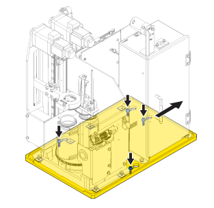
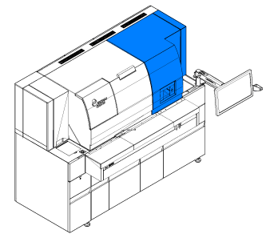
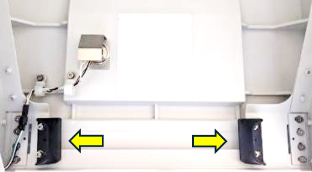
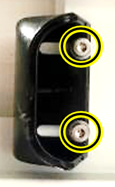

Adjusting the Substrate Loader and the Top Right Cover
This topic includes information about how to adjust the substrate loader in relation to the top right cover of the instrument.
Note: Inspect the substrate loader door and the top right cover of the instrument for evidence of rubbing. Interference between the substrate loader door and the top right cover of the instrument may result in substrate bottle rejections or in substrate auto-alignment failures.
Perform this procedure to adjust the position of the substrate loader backward inside the instrument.
Note: If you are not able to move the substrate loader backward enough to eliminate interference, adjust the top right cover. See
Adjusting the Top Right Cover for more information.
Loosen the four screws inside the keyhole slots that mount the substrate loader to the chassis, and adjust the substrate loader backward inside the instrument.

Tighten the four screws inside the keyhole slots.
Adjusting the Top Right Cover
Perform this procedure to adjust the position of the top right cover of the instrument.
Note: If adjusting the position of the top right cover of the instrument does not eliminate interference, adjust the position of the substrate loader. See
Adjusting the Position of the Substrate Loader
Open the top right cover of the instrument.

The cover guides are on the inside of the front of the cover.
Figure 427:

Loosen and adjust the position of the screws inside the cover guides.
Figure 428:

Note: Adjusting the screws further out in the center slot of the middle guide pulls the bottom gap closer.